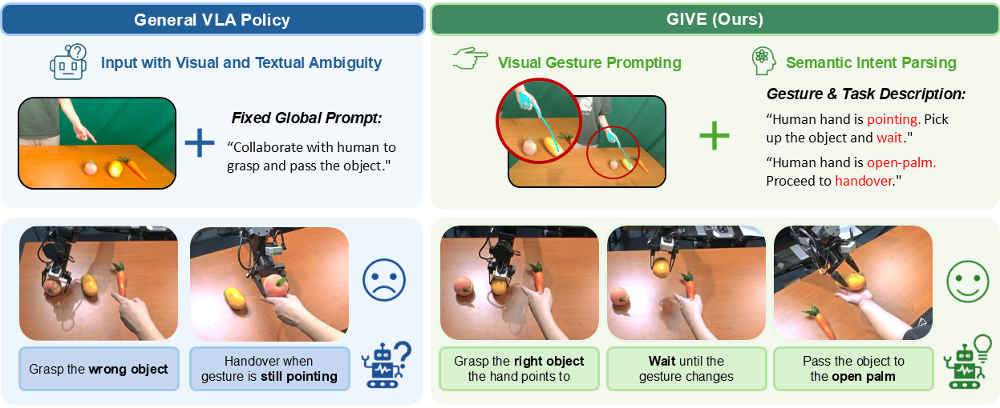

GIVE: Grounding Human Gestures in Vision-Language-Action Models
Highlights

Current VLA models treat robotic manipulation as a purely language-driven task, struggling when human intentions are conveyed through non-verbal gestures. To address this, we propose GIVE and our core contributions are:
- Effective Method without Architectural Modifications: We propose an effective approach that injects human gesture cues into pre-trained VLA models without modifying their architecture.
- Complementary Dual-path Gesture Guidance Strategy: Incorporates gesture information through a visual pathway for object grounding and a semantic pathway for interaction state grounding.
- Extensive Real-World Validation: Enables VLA policies to accurately associate gestures with manipulation behaviors, improving target object recognition accuracy by 40% and overall task success rate by 80%.
Real-World Demos
Experiment comparison with baseline π0.5
Method

GIVE enhances pre-trained VLA models by transforming human gestures into two complementary guidance pathways. Specifically, the visual pathway overlays geometric gesture prompts onto robot observations to explicitly resolve spatial ambiguities for target grounding, while the semantic pathway translates continuous human hand states into high-level textual descriptions for robust intent parsing. By jointly leveraging these visual and semantic cues, GIVE enables foundation policies to accurately generate continuous manipulation actions without requiring any architectural modifications.
Experiments & Analysis
We evaluate GIVE on a sequential grasp-then-handover HRI task. Our analysis highlights three core findings:
- Integration Strategy: Our parameter-free Visual Overlay outperforms token-based injection, preserving pretrained representations while explicitly encoding gesture-object spatial relations.
- Complementary Guidance: Ablations confirm that combining visual and semantic pathways provides complementary improvements, consistently maintaining an 80% success rate where visual-only models fail.
- Robustness & Generalization: GIVE maintains stable performance across unseen spatial layouts, objects, and diverse human participants, effectively decoupling intent reasoning from visual appearance.
Impact of gesture integration mechanisms

Comparison of our visual overlay versus token-based injection approaches on policy performance.
Ablation study of guidance components
VGP (Visual Geometric Prompting) and SIP (Semantic Intent Parsing) show complementary contributions to task success.
Spatial robustness evaluation
Success rates for the initial Identify & Grasp stage across varying object locations.
Generalization to unseen human participants
Robustness demonstration against variations in body shape, clothing, and hand size.
BibTeX
@misc{liu2026givegroundinghumangestures,
title={GIVE: Grounding Human Gestures in Vision-Language-Action Models},
author={Pengfei Liu and Gen Li and Junqiao Fan and Boyu Ma and Jindou Jia and Yang Xiao and Jianfei Yang},
year={2026},
eprint={2606.13435},
archivePrefix={arXiv},
primaryClass={cs.RO},
url={https://arxiv.org/abs/2606.13435},
}